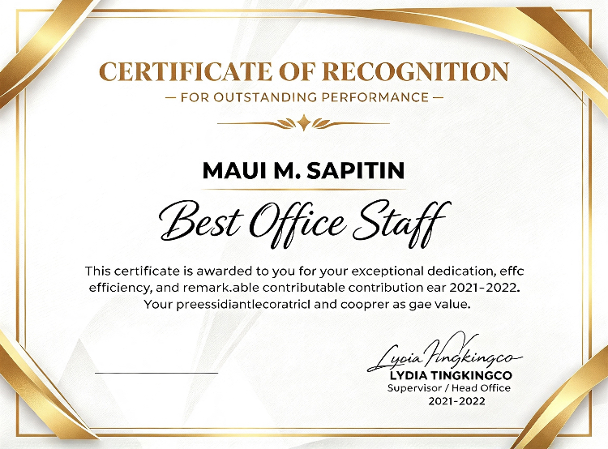
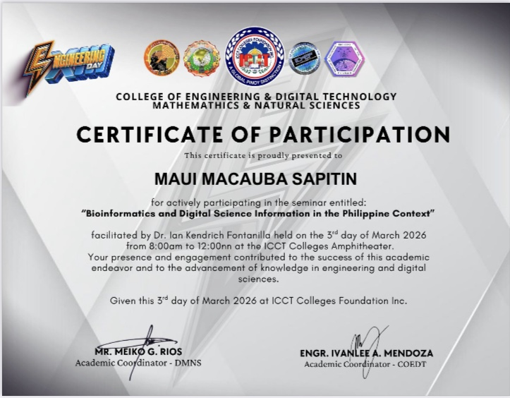
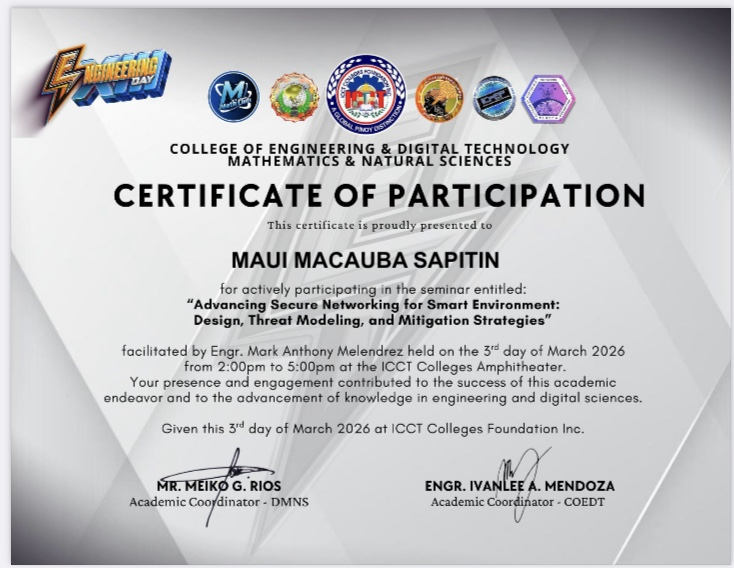

Computer Engineering Student
Welcome to my profile! I'm a 4th-year Computer Engineering student who is organized, detail-oriented, and always eager to learn and grow.
BS Computer Engineering
ICCT Colleges Foundation Inc.
Grade 12 — Academic Awardee & Best in Entrepreneurship
Tacloban National Agricultural School
S.Y. 2021–2022
Grade 10 — Academic Awardee & Best in Entrepreneurship
Tacloban National Agricultural School
S.Y. 2019–2020
Grade 9 — Class Achiever & Best in Araling Panlipunan
Tacloban National Agricultural School
S.Y. 2018–2019
Grade 8 — Class Achiever
Tacloban National Agricultural School
S.Y. 2017–2018
*Certificates are currently kept in our province, but these achievements mean a lot to me.
• Encoding & Data Management • Records Organization • Invoice Processing
• Scheduling & Calendar Management • Document Preparation & Filing
• Customer Service • Attention to Detail • Time Management
• Microsoft Office (Word, Excel, PowerPoint) • Google Workspace
• Basic Computer Troubleshooting • GitHub & Basic Web Publishing
• Organization & Multitasking • Written & Verbal Communication
• Adaptability & Willingness to Learn • Teamwork & Collaboration
Managing daily department paperwork — processing new orders, creating invoices, tracking unpaid payments, and following up on due dates. Making sure all records are accurate and settled on time.
Responsible for encoding and organizing invoices, receipts, and product data. Ensured all information was correctly documented and updated.
Handled administrative tasks, managed schedules, organized records, and assisted with office documentation and communication.
A web-based event management system designed to simplify event scheduling, organization, and coordination for departments and student organizations. Features include event creation, scheduling, notifications, and record tracking — built to make event planning faster and more organized for the college community.
Awarded for outstanding dedication, efficiency, and exemplary performance in office administration and service.
Supervised by: Ms. Lydia Tingkingco

"Advancing Secure Networking for Smart Environment: Design, Threat Modeling, and Mitigation Strategies"
ICCT Colleges Foundation Inc.

"Bioinformatics and Digital Science Information in the Philippine Context"
ICCT Colleges Foundation Inc.

Email: Mauisapetin80@gmail.com
Facebook: Maui Sapetin
GitHub: @Mauisapetin